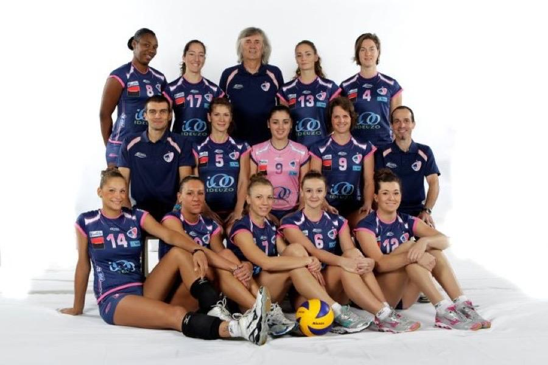
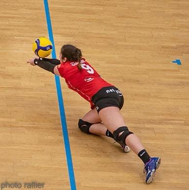
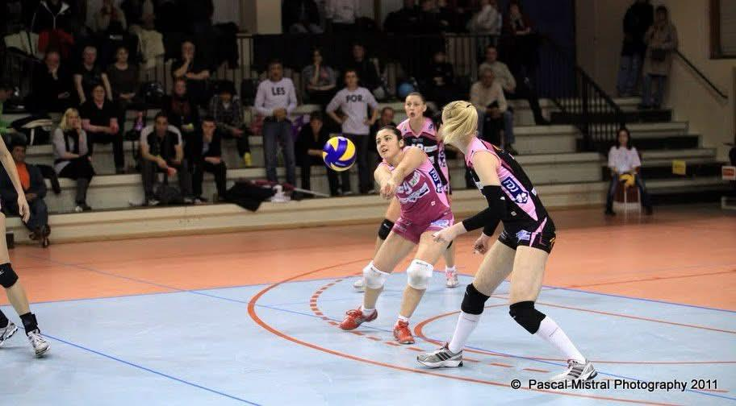
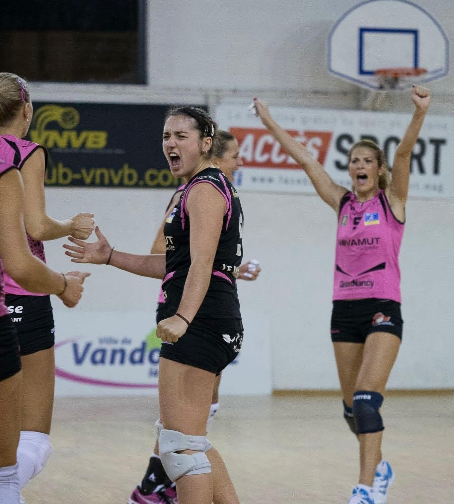
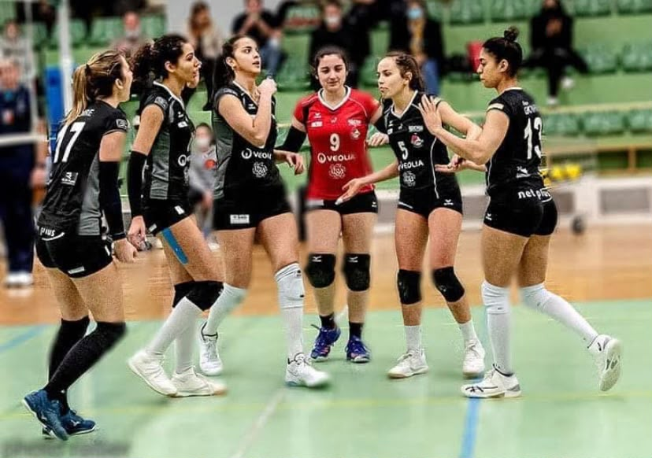
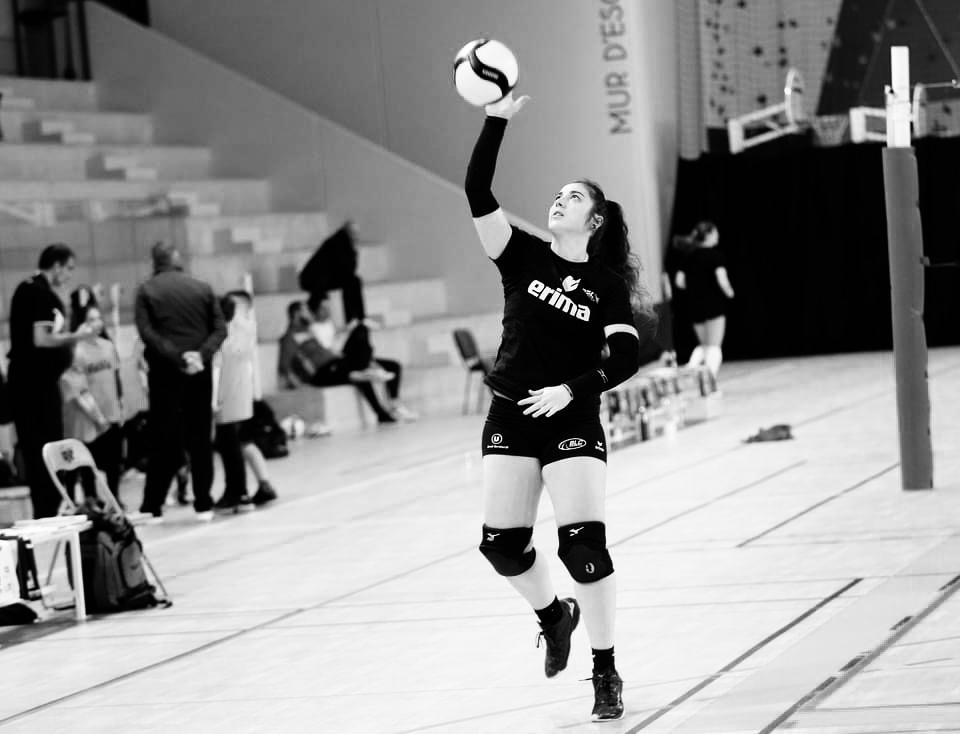

Volleyeuse professionnelle
Parcours Clubs
Responsable de la coordination du fond de jeu (réception/défense), assurant la stabilité du jeu et l'adaptation.
- Leadership technique
- Organisation
Volleyeuse Professionnelle (Poste : Libéro)
Division Elite Féminine (2ème division)
REC Volley, Rennes
Volleyeuse Professionnelle (Poste : Libéro)
Division Elite Féminine (2ème division)
VNVB, Nancy
Volleyeuse Professionnelle (Poste : Libéro)
Ligue AF (1ère division)
VBN, Nantes
Volleyeuse Professionnelle (Poste : Libéro)
Ligue AF (1ère division)
IOPV, Istres
- Distinction Pro: Elue meilleur espoir de la saison professionnellede Ligue A Féminine 2008/2009.
- Distinction Jeune: Elue meilleure joueuse arrière de la coupe de France jeunes.
Parcours Equipe de France
Equipe de France Espoir (Poste : Libéro)
Universiades (Jeux olympiques universitaires)
Schenzhen, Chine
Equipe de France Junior (Poste : Libéro)
Championnats d'Europe
Perugia, Italie
Equipe de France Cadette (Poste : Libéro)
Championnats d'Europe
Brno, République Tchèque






